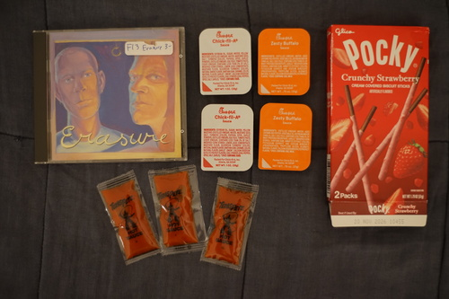
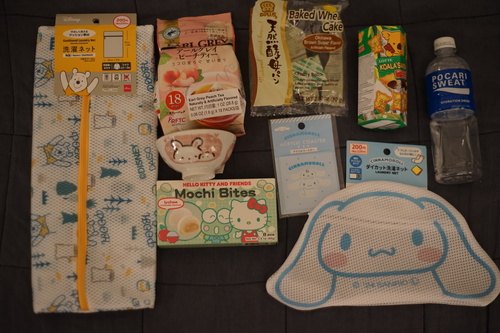

Yo!!! It's me, fran hat, and I'm back with some HAULS!!
First off, I bought a new doll!!!! I'm very blessed to have welcomed Santi~ I haven't ordered a boxless doll from Mandarake before, so that was an exciting experience. He's very cute and I can't wait to work on him. He needs so much work... I'm glad Volta became presentable before I bought another doll!
My next haul...

I tried eating Carl's Jr chicken strips out of desperation and they had nothing on Chick-Fil-A.
Uhhhh is Chick-Fil-A actually the best place on Earth???
And the big reveal: A DAISO HAUL!!

They forgot the bergamot?? Tastes like peach but nothing like earl grey!
I couldn't stop thinking about this cute bunny bowl from the last time, so I went back for it.
Did indeed taste like lychee!
Prices are sure getting hard at Daiso. Not many items were actually $2.25, the base price. It took me some time with the receipt and some UPCs to figure these out.
There was something I wish I had bought last time, but wasn't there this time. There was an acrylic keychain of a floofy dog and it said "but I'm a boy". I looked and looked and couldn't find it. I missed my chance! Please, everyone, if you are given the chance to buy him, please take it!